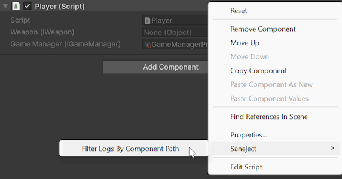
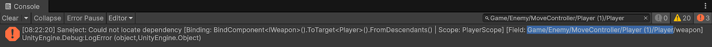

MonoBehaviour inspector
The MonoBehaviour inspector is Saneject's default inspector for components.
It keeps Unity's normal layout, behavior and serialized editing workflow, and adds Saneject-specific features such as serialize interface support.
In practice, this system has two parts:
MonoBehaviourInspector: the Unity customEditorentry point forMonoBehaviour.SanejectInspector: the shared static drawing and validation API that does the real work.
The SanejectInspector API is model-driven and uses ComponentModel and PropertyModel.
The default editor is multi-object aware with ([CanEditMultipleObjects]), so standard Unity multi-selection editing still applies.
What this inspector is for
Use this inspector when you want consistent field rendering across normal Unity components and Saneject injection targetsInjection targetComponent with injected fields, properties or methods., especially when your components use:
[Inject]fields or[field: Inject]auto-properties.[SerializeInterface]members.- Nested
[Serializable]classes that contain injected data.
Why Saneject uses a custom inspector
[SerializeInterface] uses Roslyn source generation to add interface backing fields as UnityEngine.Object members in a generated partial class.
In Unity's default inspector order, fields declared in that generated partial class are rendered after fields from your authored class. That causes interface-backed fields to always appear last in the inspector instead of where the interface members are declared among the rest of your fields.
Saneject uses a custom inspector to restore logical declaration order, so interface-backed members are rendered where the corresponding interface members belong, along with other UX improvements.
Drawing behavior
For each inspected component, Saneject draws:
- A disabled
Scriptfield at the top, matching Unity's standard inspector header behavior. - Serializable fields collected from base type to derived type.
- Public fields,
[SerializeField]fields, and[SerializeInterface]fields. - Excludes members that Unity should not draw in this workflow, such as
[NonSerialized]and[HideInInspector]. - Nested serialized classes and their fields recursively.
Default inspector attributes such as [Tooltip] continue to work for both normal fields and interface-backed fields.
Attribute-driven behavior
Saneject applies two inspector drawing rules based on attributes:
- Fields with
[Inject]are read-only in the inspector. - Fields with
[ReadOnly]are also read-only, even when not injected.
You can hide injected members with:
Saneject/Settings/User Settings/Show Injected Fields & Properties
This toggle affects both [Inject] fields and [field: Inject] auto-properties.
Nested serialized class support
If a field is a nested serializable class, Saneject draws it as a foldout and recursively draws child members. The same rules and drawing behavior still apply inside nested classes.
Basic example:
using System;
using UnityEngine;
[Serializable]
public class SpawnSettings
{
[SerializeField]
private float delay = 1f;
[SerializeField]
private int count = 3;
}
public class EnemySpawner : MonoBehaviour
{
[SerializeField]
private SpawnSettings settings;
}
Serialized interface validation
Roslyn-generated code already enforces the interface type for stored values, so inspector validation mainly exists to handle drag-and-drop assignment in serialized interfaceSerialized interfaceSerializeInterface member (IService, IService[], or List<IService>) that Saneject persists through a generated hidden Object backing member. fields.
[Inject] fields are read-only and managed by Saneject, so interface drag-and-drop and inspector validation is only applicable when using [SerializeInterface] without [Inject].
Validation behavior:
- Single interface member: validates the assigned object against the expected interface type.
- Array or list interface member: validates each element.
- If a dropped value is a
GameObject, Saneject triesTryGetComponent(expectedType, out component)and stores that component instead, matching Unity's behavior when drag-and-droppingGameObjects into component slots. - If no matching component is found, or the assigned object still does not implement the expected interface type, Saneject logs an error and clears the reference to
null.
Models
The inspector uses a small model layer to keep drawing code predictable:
ComponentModelcaptures the inspected target, itsSerializedObject, and top-level drawable properties.PropertyModelcaptures display name, serialized property path, read-only state, interface metadata, collection metadata, and child properties.
See ComponentModel and PropertyModel for the full API reference.
Using the Saneject inspector API in custom inspectors
MonoBehaviourInspector is intentionally thin and delegates to SanejectInspector.
If you create a custom inspector for a specific component type and still want Saneject behavior, call the API from your custom editor flow.
Basic example:
using Plugins.Saneject.Editor.Inspectors;
using Plugins.Saneject.Editor.Inspectors.Models;
using UnityEditor;
[CustomEditor(typeof(MyComponent))]
public class MyComponentInspector : Editor
{
private ComponentModel componentModel;
private void OnEnable()
{
componentModel = new ComponentModel(target, serializedObject);
}
public override void OnInspectorGUI()
{
EditorGUILayout.HelpBox("Custom section above Saneject fields", MessageType.Info);
SanejectInspector.OnInspectorGUI(componentModel);
}
}
You can also use the API more granularly. See SanejectInspector for details.
Console filtering context menus
Saneject adds component context menu items to quickly filter logs.
Saneject/Filter Logs By Component Path- Sets the Console search text to filter by the selected ScopeScope
MonoBehaviourthat declares bindings for a part of your hierarchy.'s path.
- Sets the Console search text to filter by the selected ScopeScope
Right click on component header and Saneject/Filter Logs By Component Path:

This adds the Scope type to the Console search text:
